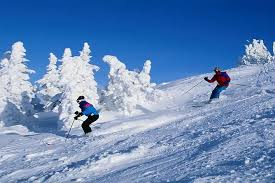
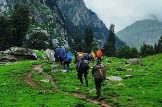
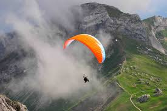
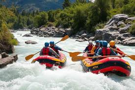
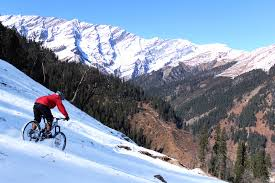

Perfect for beginners and pros alike, skiing here lets you glide through powdery snow with panoramic Himalayan views.

Manali is the gateway to legendary treks like: Hampta Pass, Beas Kund and Bhrigu Lake

Soar like a bird over the Kullu Valley with tandem paragliding! The 15–20 minute flight offers adrenaline-pumping takeoffs and gentle landings, with the Pir Panjal range beneath you.

The Beas River offers Grade II-III rapids (moderate) near Pirdi and Jhiri.

Manali’s rugged trails, like Manali to Leh or Jogini Falls, test endurance with rocky paths, forest descents, and river crossings.
